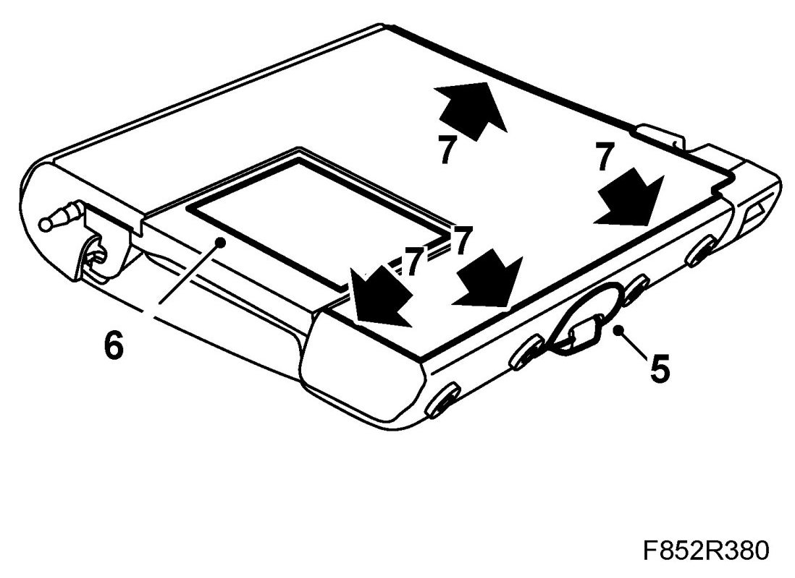
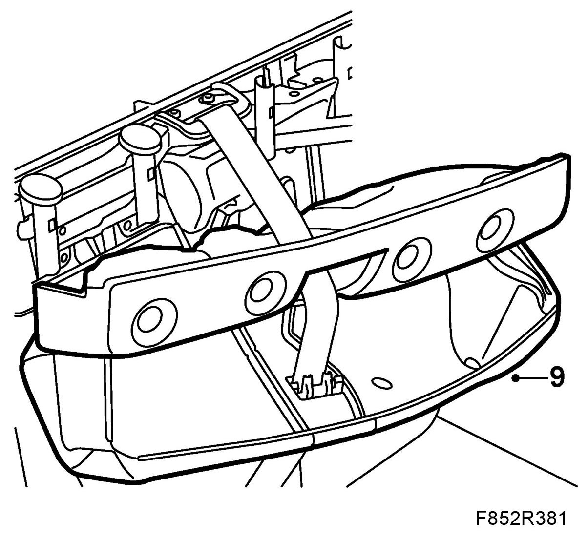
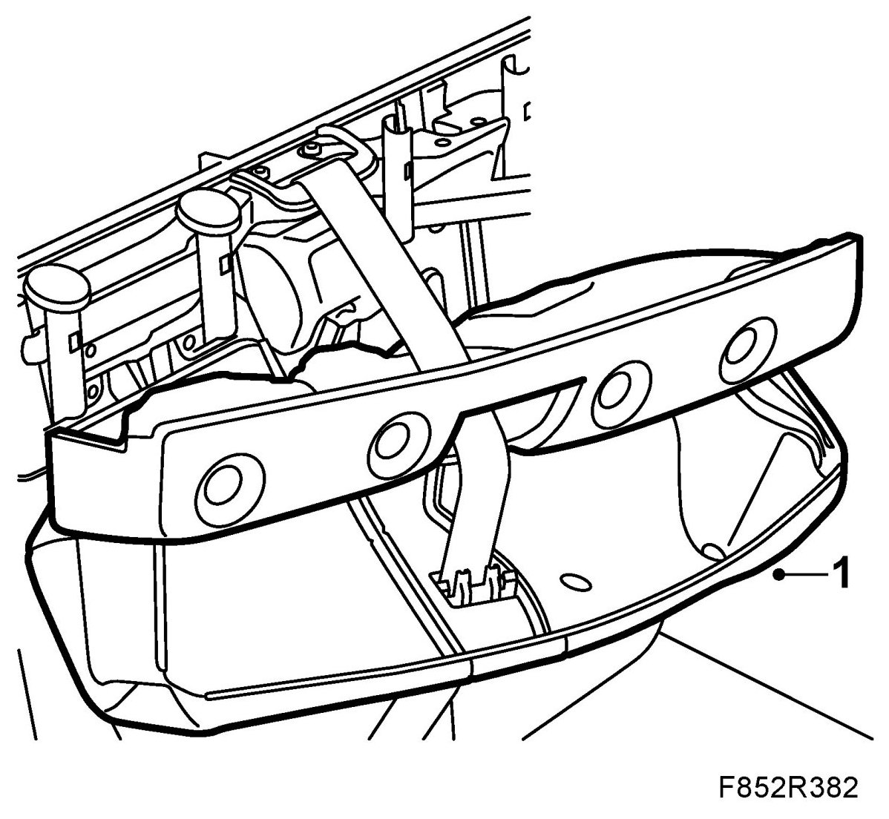
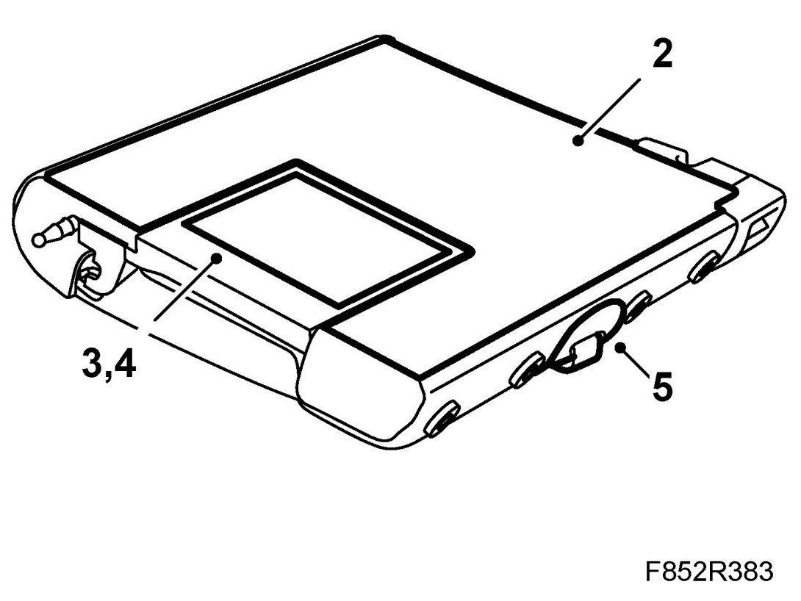

Upholstery, Rear Backrest, 5D
Upholstery, Rear Backrest, 5D
To remove
1. Remove Rear seat backrest, 5D from the rear seat.
2. Remove Head restraint sleeves.
3. Remove Armrest.
4. Remove Backrest lock plastic covers, 5D.
5. Remove the backrest belt guide.

6. Remove the through-load hatch frame.
7. Remove the upholstery strips from the backrest.
8. Remove the through-load hatch by undoing the locating pins at the lower edge of the backrest.
9. Carefully pull the upholstery off the foam backrest cushion.

To fit
1. Fit the upholstery to the foam backrest cushion.

2. Fit the backrest upholstery strips. Make sure the upholstery is properly stretched.

3. Fit the through-load hatch by locating the guide pins into the bottom of the leadthrough hatch.
4. Fit the through-load hatch frame.
5. Fit the seatbelt guide to the backrest.
6. Fit Backrest lock plastic covers, 5D.
7. Fit the armrest to the backrest.
8. Fit the head restraint supports and head restraint. Ensure that head restraint support catches engage properly.
9. Fit Rear seat backrest, 5D.